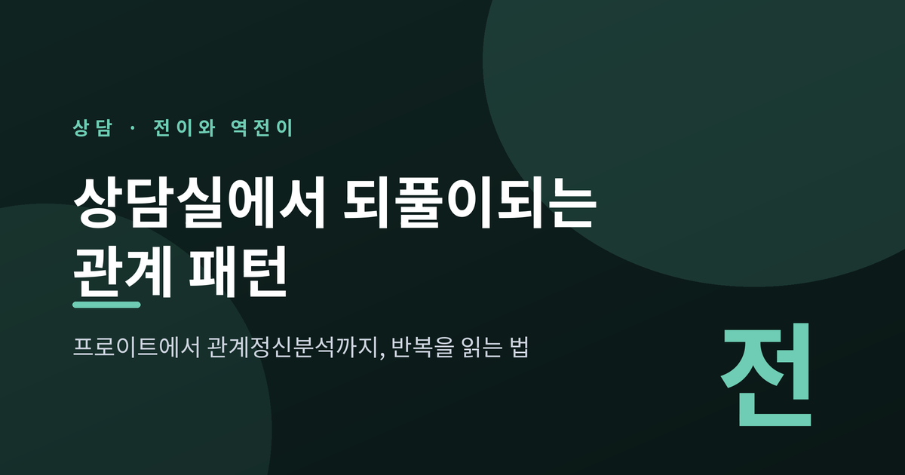
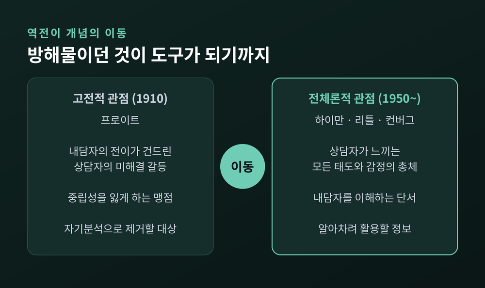
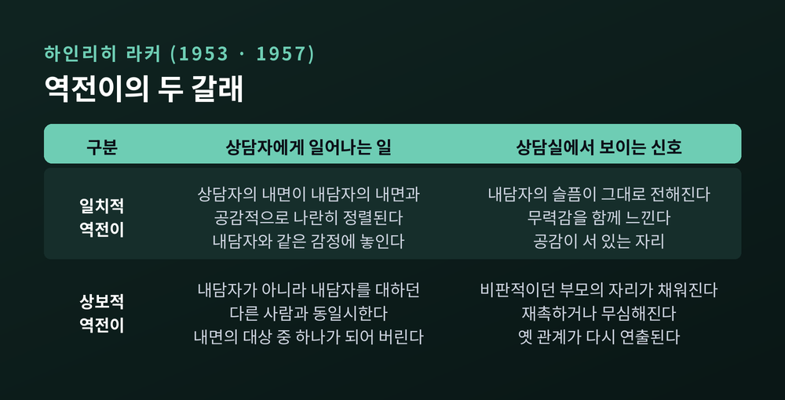
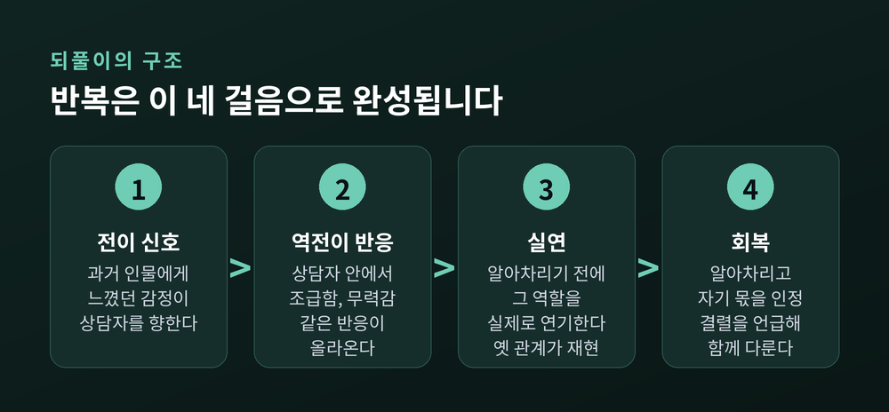
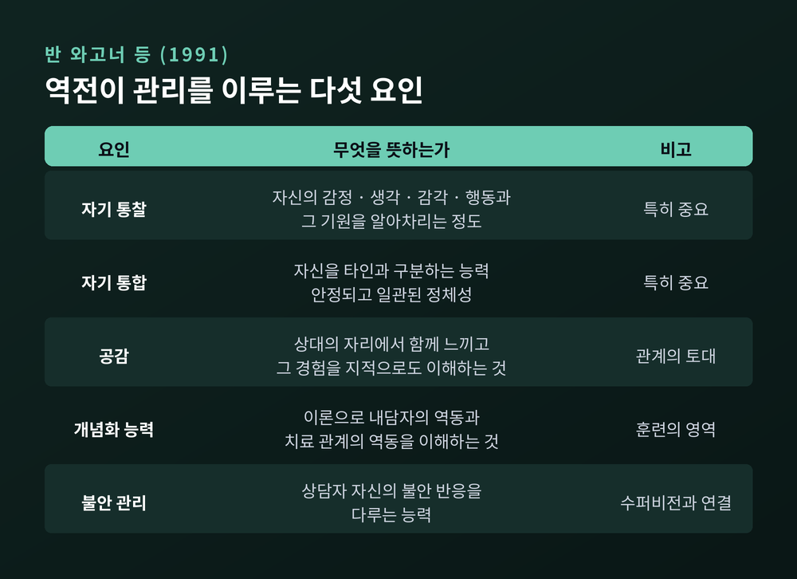
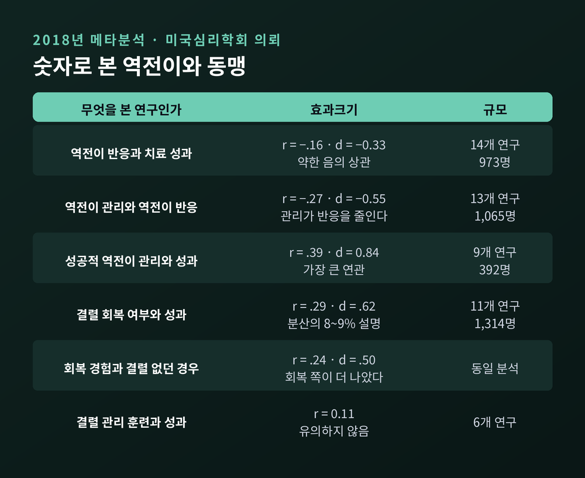

세 줄 요약
이번 글에서는 전이와 역전이를 정리해 보겠습니다. 상담실 안에서 같은 관계 패턴이 어떤 경로로 되풀이되는지, 그리고 그것을 알아차리고 다루는 데 어떤 근거가 쌓였는지 살펴보려 합니다. 자기 진단이 아니라 이해를 위한 글로 읽어 주시면 좋겠습니다.
역전이라는 말은 1910년에 처음 등장합니다. 프로이트의 「정신분석 치료의 미래 전망」에서였습니다.
정의는 짧았습니다. "환자가 분석가의 무의식적 감정에 미친 영향의 결과."
여기에는 판단이 담겨 있습니다. 역전이는 분석가 자신의 미해결 갈등이 건드려진 흔적이고, 따라서 치료를 흐리는 맹점이라는 것입니다. 통제되지 않은 역전이의 결과는 분석적 중립성의 상실로 규정됐습니다.
그래서 프로이트가 내놓은 처방도 일관됩니다. 분석가는 자기분석으로 활동을 시작하고, 환자를 관찰하는 동안에도 그 작업을 계속 깊이 밀고 나가야 한다는 것이었습니다.
정리하면 고전적 관점에서 역전이는 정보가 아니라 오염입니다.
전환은 한 편의 짧은 논문에서 시작됩니다. 파울라 하이만이 1950년에 발표한 「역전이에 대하여」입니다.
하이만의 주장은 이랬습니다. 분석가의 총체적 정서 반응은 단순한 장애물이 아니라, 환자의 무의식을 이해하는 중요한 도구라는 것입니다.
이 관점을 전체론적(totalistic) 역전이라고 부릅니다. 치료자가 내담자에게 느끼는 모든 태도와 감정, 무의식적인 것과 의식적인 것 전부를 가리킵니다. 여기에는 두 가지가 함께 들어갑니다. 내담자의 전이가 건드린 상담자의 미해결 갈등, 그리고 상담 중 실제로 일어난 일에 대한 상담자의 정당한 반응입니다.
하이만 이후 리틀(1951), 위니콧, 컨버그(1965)가 같은 방향으로 논의를 넓혔습니다.
예전에는 상담자가 흔들렸다는 사실 자체가 실패의 증거였습니다. 지금은 그 흔들림이 무엇을 알려 주는지를 먼저 묻습니다.

하인리히 라커는 1953년과 1957년 논문에서 역전이를 두 종류로 나눕니다. 지금도 가장 널리 쓰이는 구분입니다.
첫째는 일치적(concordant) 역전이입니다. 상담자의 내면이 내담자의 내면과 공감적으로 나란히 정렬되는 경우입니다. 내담자의 상태를 그대로 받아들여, 상담자도 같은 생각과 감정에 놓입니다. 공감이 서 있는 자리이기도 합니다.
둘째는 상보적(complementary) 역전이입니다. 이번에는 상담자가 내담자가 아니라, 내담자를 대하던 다른 사람과 동일시합니다. 마치 내담자 내면에 자리 잡은 대상 중 하나가 된 것처럼 됩니다. 비판적이던 부모, 무심하던 배우자의 자리가 상담실에서 다시 채워집니다.
내담자는 무의식적으로 옛 관계를 재연하려 하고, 상담자는 거기에 맞는 역할을 하도록 압력을 느낍니다.

상보적 역전이가 작동하는 기제를 설명하는 개념이 둘 있습니다.
하나는 투사적 동일시입니다. 오그덴(1979)은 이를 상담자 안에 감정을 유도하는 과정으로 설명했습니다. 투사하는 쪽은 받는 쪽이 그 투사를 받아들이도록 무의식적 압력을 가합니다. 그리고 그 압력에는 응하지 않으면 상대에게 존재하지 않는 사람이 되어 버릴 것 같은 위협이 섞여 있습니다.
다른 하나는 역할반응성입니다. 샌들러(1976)는 분석가의 겉보기에 비합리적인 반응이, 환자가 무의식적으로 건네는 역할을 반사적으로 받아 든 결과일 수 있다고 보았습니다.
두 설명은 결국 같은 곳을 가리킵니다. 상담자는 자기 성격 때문만이 아니라, 그 자리에서 맡겨진 역할 때문에도 특정한 방식으로 반응하게 된다는 것입니다.
1980~90년대에 역전이가 여러 학파 사이의 공통 기반으로 떠오른 것도 이 두 개념, 즉 투사적 동일시와 역전이 실연의 발전 덕분이었습니다.
이해를 돕기 위해 일반화된 가상의 장면을 하나 그려 보겠습니다. 실존 인물의 사례가 아닙니다.
한 내담자가 매번 십 분씩 늦게 도착합니다. 늦은 것을 사과하지만, 표정은 담담합니다. 상담자는 처음에는 대수롭지 않게 넘깁니다.
그런데 몇 회기가 지나면서 상담자 안에서 조급함이 올라옵니다. 남은 시간을 계산하게 되고, 말을 서두르게 되고, 평소보다 빨리 조언을 건넵니다. 회기가 끝나면 묘한 피로가 남습니다.
여기서 멈춰 볼 지점이 있습니다. 조급함은 상담자 개인의 성향일 수도 있습니다. 하지만 상보적 역전이일 수도 있습니다. 늘 재촉당해 온 사람의 삶에서, 재촉하는 역할을 상담자가 넘겨받은 것입니다.
구분은 보통 혼자 하기 어렵습니다. 그래서 이 자리에서 수퍼비전이 필요해집니다.

관계정신분석은 여기서 한 걸음 더 나갑니다. 미첼과 아론이 이끈 흐름입니다.
핵심은 2인 심리학입니다. 상담을 양자 관계의 과정으로 보고, 두 사람의 주관성이 치료의 장에 함께 기여한다고 봅니다. 내담자 한 사람의 내면만 들여다보는 1인 모델과 대비됩니다.
이 관점에서 전이와 역전이는 어느 한쪽에 들어 있는 물건이 아닙니다. 두 사람 사이에서 깎여 나온 공동 창조물입니다. 해석 역시 함께 만든 것으로 봅니다.
국내 리뷰 문헌의 정리도 같은 방향입니다. 학파 사이 차이는 여전히 남아 있지만, 역전이가 내담자를 이해하는 데 유용하다는 점, 그리고 상담자의 역전이 반응이 양쪽의 기여를 포함한 공동 창조물이라는 점에는 폭넓은 수렴이 있다는 것입니다.
여기서부터는 실증 연구입니다. 2018년 미국심리학회 특별위원회의 의뢰로 진행된 메타분석이 기준선을 제공합니다.
헤이스와 겔소 등(2018)은 세 개의 메타분석을 내놓았습니다.
첫째, 역전이 반응 자체는 치료 성과와 약한 음의 상관을 보였습니다. r = −.16, d = −0.33 (14개 연구, 973명). 작습니다.
둘째, 역전이 관리 요인은 역전이 반응을 줄였습니다. r = −.27, d = −0.55 (13개 연구, 1,065명).
셋째, 성공적인 역전이 관리는 더 나은 치료 성과와 연결됐습니다. r = .39, d = 0.84 (9개 연구, 392명).
세 숫자를 나란히 놓으면 방향이 분명해집니다. 역전이가 일어났는지보다, 그것을 다루었는지가 훨씬 크게 작동합니다.
관리의 구성 요소는 1991년 반 와고너 등의 연구에서 다섯 가지로 정리됐습니다. 자기 통찰, 자기 통합, 공감, 개념화 능력, 불안 관리입니다. 이 가운데 자기 통합과 자기 통찰이 특히 중요하다고 평정됐습니다.

다만 한계를 함께 적어 두어야 하겠습니다. 세 메타분석 모두에서 연구 간 이질성이 유의하게 컸습니다. 저자들 스스로 연구 기반의 한계를 짚으며 논문을 맺습니다.
같은 해 같은 학술지에 실린 또 하나의 메타분석이 있습니다. 유뱅크스, 무란, 사프란의 동맹 결렬-회복 연구입니다.
동맹은 세 가지로 이루어집니다. 치료 목표에 대한 합의, 치료 과제에 대한 협력, 그리고 정서적 유대입니다. 이 가운데 어느 하나라도 나빠지면 결렬입니다. 완전한 파국만이 아니라 미묘한 긴장과 어긋남도 포함됩니다.
결렬은 두 얼굴로 나타납니다. 불만이나 적대감을 드러내는 직면 결렬, 그리고 회피하거나 비위를 맞추며 거리를 두는 철수 결렬입니다. 뒤쪽이 알아차리기 훨씬 어렵습니다.
빈도는 측정 방법에 따라 크게 갈립니다. 치료 첫 여섯 회기 동안 결렬을 보고한 비율은 환자 37%, 치료자 56%였습니다. 자기보고로는 전체 회기의 25~68%로 잡히지만, 훈련된 관찰자가 5분 단위로 평정하면 91~100%까지 올라갑니다. 어느 쪽이 참이라기보다, 당사자가 인식하지 못하는 결렬이 많다는 뜻으로 읽는 편이 정확합니다.
성과와의 관계는 이렇습니다. 결렬을 겪은 내담자 가운데 회복이 이루어진 쪽이 그렇지 않은 쪽보다 나은 결과를 보였습니다. r = .29, d = .62 (11개 연구, 1,314명). 성과 분산의 8~9%를 설명하는 크기입니다.
더 눈에 띄는 것은 다음 수치입니다. 결렬-회복을 경험한 내담자와 결렬을 아예 겪지 않은 내담자를 비교했을 때도 회복 쪽이 나았습니다. r = .24, d = .50.

여기서 균형을 잡아야 합니다.
포함된 연구들은 자연스럽게 일어난 결렬과 회복을 관찰한 것입니다. 결렬을 일부러 만들어 무작위로 배정하는 연구는 윤리적으로 가능하지 않습니다. 그래서 다른 설명이 남습니다. 어차피 좋아질 사람이 회복에도 잘 협력했을 가능성, 이미 나아지던 사람의 결렬이 덜 심각했을 가능성 같은 것들입니다.
실제로 결렬 관리 훈련과 수퍼비전을 받은 치료자의 환자가 조금 더 좋아지긴 했지만, 그 차이는 통계적으로 유의하지 않았습니다(r = 0.11). 인지행동치료가 주 치료일 때만 유의한 개선이 관찰됐습니다(r = 0.28).
리뷰 저자들의 결론은 절제되어 있습니다. 인과로 입증되지는 않았으나, 실무에서는 인과로 가정하고 결렬에 대비하는 편이 안전하다는 것입니다.
전이 해석을 두고도 합의가 없습니다. 한 체계적 개관은 전이 해석을 사용한 정신역동치료가 무처치 대조군보다는 우월했지만, 다른 심리치료나 전이 해석을 쓰지 않는 정신역동치료보다 우월하지는 않았다고 보고합니다. 오슬로 대학의 무작위 대조 연구 FEST는 환자 100명을 전이 작업 조건과 비(非)전이 작업 조건에 배정했는데, 전반적 효과는 동등했습니다. 대상관계의 질이 낮거나 성격장애가 있는 환자, 그리고 여성 환자에서만 전이 작업의 특이적 이득이 나타났습니다.
요컨대 "전이를 많이 해석할수록 좋다"는 말은 근거가 없습니다.
역전이를 도구로 쓰려면 상담자가 먼저 버텨야 합니다. 그래서 수퍼비전은 선택이 아니라 구조입니다.
지속적인 수퍼비전은 대리외상의 완충 장치로 인정되어 왔습니다. 어려운 재료를 처리할 공간을 만들고, 반응을 정상화하고, 건강한 전문가 경계를 다시 세우는 기능을 합니다.
개념도 구분해 두면 좋겠습니다. 역전이가 특정 내담자에 대한 반응이라면, 대리외상은 여러 내담자와 긴 시간에 걸친 반응입니다. 소진이나 업무 스트레스와 달리 대리외상은 외상 작업자에게 특유한 현상으로 분류됩니다.
씁쓸한 조사 결과도 있습니다. 치료자와 병원 종사자 대상 설문에서 대다수가 자기돌봄 전략이 대리외상 위험을 줄인다고 믿었습니다. 그러나 실제로 그 전략을 쓴다고 답한 사람은 매우 적었습니다.
아는 것과 하는 것 사이의 거리는, 상담자에게도 똑같이 남아 있는 셈입니다.
메타분석 저자들이 정리한 실무 권고를 요약해 두겠습니다.
마지막 항목이 순서상 끝에 있을 뿐, 무게는 가볍지 않습니다. 자기 부정적 감정을 견디고 살펴본 경험이 있어야, 내담자에게도 같은 자리를 내어 줄 수 있기 때문입니다.
끝으로 한 마디만 더 드리겠습니다.
전이와 역전이는 상담실에서만 일어나는 특수한 사건이 아닙니다. 사람이 관계를 맺는 방식 자체가 반복을 품고 있고, 상담실은 그 반복이 비교적 안전하게 드러나는 장소일 뿐입니다.
"되풀이는 결함의 증거가 아니라, 아직 다루지 못한 관계의 흔적입니다."
다만 이 글은 이해를 돕기 위한 것이지 진단을 위한 것이 아닙니다. 읽으신 개념을 자신이나 주변 사람에게 이름표처럼 붙이지 않으셨으면 합니다. 관계에서 같은 패턴이 반복되어 일상이 오래 힘드시다면, 혼자 해석하기보다 전문 상담기관이나 정신건강의학과, 자격을 갖춘 심리치료 전문가와 함께 살펴보시길 권합니다. 상담자라면 정기적인 수퍼비전과 자기돌봄을 미루지 않으시길 바랍니다.
관계가 또 같은 자리로 돌아오는 것 같아 지치셨다면, 한 가지만 기억해 주시면 좋겠습니다. 그 자리를 알아보는 사람이 둘이 되는 순간, 반복은 이미 조금 달라져 있습니다.